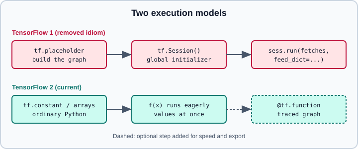

Migrating from TensorFlow 1, where older books and tutorials are outdated
|
This content was generated with the assistance of AI and should be verified against the official documentation before being relied on in production. |
Much of the printed and online material about TensorFlow was written for TensorFlow 1, where a program first built a static graph and then ran it inside a Session. That programming model, and a large part of the API that went with it, no longer exists in current releases. This page lists the TensorFlow 1 idioms you will meet in older books, forum answers and research repositories, says what replaced each one, and shows how to port code mechanically with tf_upgrade_v2 and by hand. The modern equivalents are explained in depth on Graphs and tf.function, Variables, Modules, Automatic Differentiation and A Training Loop with TF Core. The Keras side of the story (Keras 2 versus Keras 3) is on Migrating from Keras 2 to Keras 3.
It targets Python 3.13 and TensorFlow 2.21 with Keras 3.15 (TensorFlow 2.22 is labelled upcoming) and was checked against the official documentation and the TensorFlow RELEASE.md on 2026-10-30. Examples were run on Python 3.13 with TensorFlow 2.21 and Keras 3.15 (CPU) on 2026-10-31, including tf_upgrade_v2 on a small TensorFlow 1 file.
How the programming model changed
In TensorFlow 1 a call such as tf.matmul(a, b) did not compute anything: it added a node to a global default graph and returned a symbolic handle. Values only appeared when a Session ran the graph with a feed_dict supplying the placeholders. TensorFlow 2 executes operations eagerly, like NumPy, and uses tf.function to compile an ordinary Python function into a graph only when you ask for it. Variables are ordinary Python objects that you keep track of yourself (usually as attributes of a tf.Module or a Keras layer), not entries in global collections.

The figure is an original drawing based on the explanations in the official TF1 versus TF2 guide.
Consequences you will notice when porting:
-
There is no
Session, notf.placeholderand no variable initializer step. -
Variables, losses and weight updates are no longer discovered through global collections; you hold them yourself.
-
Python side effects inside a
tf.function(appending to a list, printing) run only while tracing, not on each call. -
Tensors compare by value with
==in TensorFlow 2, so they are no longer hashable; use.ref()when a tensor must be a dictionary key or set member. -
TensorShapeentries are plain integers orNone, soshape[0].valuebecomesshape[0].
A dated table of removed and replaced idioms
The table is dated 2026-10-30 and refers to TensorFlow 2.21. "Removed" means the symbol is not in the main tf namespace any more; many of the same names survive in tf.compat.v1, which exists only to help you migrate (see below).
| TensorFlow 1 idiom (old books) | TensorFlow 2.21 replacement | Remarks |
|---|---|---|
|
Call the function directly; wrap hot code in |
|
|
A Python argument to a function, |
Shapes and dtypes come from the real values |
|
Not needed |
Variables are initialised when created |
|
|
Naming through scopes is replaced by object attributes |
Global collections such as |
|
Collection APIs are unavailable under eager execution |
|
Removed with TensorFlow 2.0; use the mainline |
Not converted automatically by |
|
|
Keras layers are objects, not functions that create variables on each call |
|
|
Names and arguments differ; see Optimizers |
|
|
See GradientTape |
|
|
See Checkpoints and Saving Keras Models |
|
Keras |
The Estimator API was removed in TensorFlow 2.16 |
|
Keras preprocessing layers |
|
|
Iterate the dataset in a |
See tf.data |
|
|
Metrics are stateful objects with |
|
|
See TensorBoard |
|
|
Removed from the TensorFlow namespace |
|
Usually unnecessary |
Eager execution and |
|
Plain Python |
Control flow v2 is function-based |
|
|
Argument changed meaning: rate is the drop probability |
|
|
Many top-level aliases moved into submodules |
Source: https://www.tensorflow.org/guide/migrate/tf1_vs_tf2 and https://www.tensorflow.org/guide/migrate/upgrade
Two caveats about the table. First, the exact list of renamed top-level aliases is long and is generated, not memorised: let tf_upgrade_v2 rewrite them rather than editing by hand. Second, the script’s choices are conservative. Run on TensorFlow 2.21, it rewrites tf.random_normal to tf.random.normal, tf.log to tf.math.log and tf.to_float(x) to tf.cast(x, dtype=tf.float32), but tf.div only to tf.compat.v1.div and tf.train.Saver to tf.compat.v1.train.Saver, and it leaves tf.layers.dense untouched. The old names are gone from the top-level tf namespace and survive only under tf.compat.v1, and tf.compat.v1.layers.dense raises an AttributeError saying that dense is not available with Keras 3, so tf.layers code must be rewritten with keras.layers by hand.
tf.contrib is gone
tf.contrib was a staging area for experimental and community-contributed code. It was not shipped with TensorFlow 2.0, and the upgrade script reports uses of it as errors that it cannot fix. What replaced it depends on what you used:
-
Layers, RNN cells and learning utilities migrated into Keras (
keras.layers,keras.layers.RNNwith cell classes) or into the mainlinetf.data,tf.distributeandtf.imagemodules. -
Some projects moved to the separate TensorFlow Addons package. That package has since been archived, so new code should not depend on it; see Ecosystem and Project Status.
-
The remainder has to be replaced by a maintained library or by copying and maintaining the needed source yourself.
Treat any book chapter built around tf.contrib.slim, tf.contrib.learn, tf.contrib.rnn or tf.contrib.layers as historical. The concepts (convolutions, LSTMs, batch normalisation) still apply, but the code does not run.
tf.estimator is removed
Estimators were the high-level API of TensorFlow 1.x and early 2.x releases. They build graphs and sessions internally, so they never fitted the TensorFlow 2 execution model, and the official migration guide called them (together with tf.feature_column) "false friends" that live in the tf namespace but ignore TensorFlow 2 behaviour. The TensorFlow 2.16.1 release notes list the tf.estimator API as removed, so tf.estimator.Estimator, tf.estimator.train_and_evaluate, the canned estimators and Model.model_to_estimator are not available in TensorFlow 2.21. Port Estimator code to a Keras model trained with fit and a tf.data pipeline.
import keras
import tensorflow as tf
def make_dataset(features, labels, batch_size=32, training=True):
"""Replaces an Estimator input_fn."""
ds = tf.data.Dataset.from_tensor_slices((features, labels))
if training:
ds = ds.shuffle(buffer_size=1024)
return ds.batch(batch_size).prefetch(tf.data.AUTOTUNE)
def build_model(n_features):
"""Replaces model_fn: a Keras model instead of a function returning EstimatorSpec."""
return keras.Sequential(
[
keras.Input(shape=(n_features,)),
keras.layers.Dense(64, activation="relu"),
keras.layers.Dense(1),
]
)
model = build_model(10)
model.compile(optimizer="adam", loss="mse", metrics=["mae"])
# train_and_evaluate becomes fit with validation_data; predict stays predict.
# model.fit(make_dataset(x_train, y_train), validation_data=make_dataset(x_val, y_val, training=False), epochs=5)Sessions and placeholders in practice
The classic TensorFlow 1 pattern and its TensorFlow 2 translation, side by side. The old version is shown only as prose: it declared a placeholder, built the expression, created a session, initialised variables and called run with a feed_dict. In TensorFlow 2 the same idea is a function.
import tensorflow as tf
@tf.function(input_signature=[tf.TensorSpec(shape=[None, 3], dtype=tf.float32)])
def affine(x):
# w and b would normally live on a tf.Module or a Keras layer (see the Modules page)
return tf.matmul(x, tf.ones([3, 2])) + 0.5
print(affine(tf.constant([[1.0, 2.0, 3.0]]))) # tf.Tensor([[6.5 6.5]], shape=(1, 2), dtype=float32)Differences worth remembering:
-
input_signatureplays the role the placeholder shape used to play;Noneleaves a dimension dynamic. Without a signature,tf.functionretraces for each new input shape or dtype, which is covered on Graphs and tf.function. -
A
tf.functiondoes not prune unused work the waySession.run(fetches)did: every variable update in the traced body runs even if you ignore part of the output. Split code into several functions when you only want part of it. -
Variables may only be created on the first call of a traced function; create them outside or in
build.
Variables, scopes and collections
TensorFlow 1 found variables by name through tf.get_variable, variable_scope and the global collections. TensorFlow 2 removes global collections: untracked variables are simply garbage collected. Group variables in a tf.Module (or a Keras layer or model) and read them through trainable_variables.
import tensorflow as tf
class Dense(tf.Module):
def __init__(self, n_in, n_out, name=None):
super().__init__(name=name)
self.w = tf.Variable(tf.random.normal([n_in, n_out], stddev=0.1), name="w")
self.b = tf.Variable(tf.zeros([n_out]), name="b")
@tf.function
def __call__(self, x):
return tf.matmul(x, self.w) + self.b
layer = Dense(3, 2)
print([v.name for v in layer.trainable_variables]) # ['b:0', 'w:0']Resource variables replace the old reference variables and are always used when eager execution is on. Code that tested isinstance(v, tf.compat.v1.Variable) can give different answers in TensorFlow 2; check the release notes if a legacy library does this.
The upgrade script tf_upgrade_v2
tf_upgrade_v2 is installed with TensorFlow and rewrites TensorFlow 1 Python source (and notebooks) to TensorFlow 2 style. It renames symbols, adds keyword arguments where parameter order changed, and writes a report with INFO, WARNING and ERROR lines with line numbers. It is a first step, not a guarantee that the code is correct TensorFlow 2 code.
# one file
tf_upgrade_v2 --infile old_model.py --outfile new_model.py
# a whole project, with a report
tf_upgrade_v2 --intree legacy_project/ --outtree legacy_project_v2/ --reportfile report.txt
# conservative mode: only switch imports to tensorflow.compat.v1
tf_upgrade_v2 --mode SAFETY --infile old_model.py --outfile old_model_safe.pyUseful options:
| Option | Effect |
|---|---|
|
Convert one |
|
Convert a directory tree; |
|
Allow overwriting the input files |
|
|
|
Where the report is written |
|
Skip renaming the import to |
|
Print the entire log instead of only errors |
Practical advice from the official guide: do not hand-edit before running the script (it can then map keyword arguments of reordered functions incorrectly), make sure tests exist and pass first, and read every ERROR line, since tf.contrib and similar usage is flagged but not converted. The recommended order is: test on TensorFlow 1.15, run the script over the whole tree including tests, review the report, install TensorFlow 2, run with tf.compat.v1.disable_v2_behavior(), then enable the version 2 behaviours and finally remove the remaining compat.v1 calls.
The script is still installed with TensorFlow 2.21 and runs on Python 3.13. On a small TensorFlow 1 file it renamed tf.Session and tf.placeholder to their tf.compat.v1 forms, reported tf.contrib.layers.flatten as an ERROR it cannot convert, and wrote the details to report.txt.
tf.compat.v1 as a bridge
tf.compat.v1 keeps most TensorFlow 1 symbols alive so migrated code can keep running while you modernise it. Treat it as a temporary bridge: the official guide advises proofreading the replacements the script produces and moving them to the tf.* namespace as soon as practical, because many compat.v1 APIs are not fully compatible with TensorFlow 2 behaviour. The collection APIs, for example, either raise or return empty lists under eager execution.
The behaviours can be toggled as a set or individually during an incremental port.
import tensorflow as tf
# Whole TensorFlow 1 behaviour back (graph mode, sessions): useful as a first run of converted code
tf.compat.v1.disable_v2_behavior()
# Or move forward one switch at a time (argument-free calls)
tf.compat.v1.enable_eager_execution() # can be set once per program
tf.compat.v1.enable_resource_variables()
tf.compat.v1.enable_control_flow_v2()
tf.compat.v1.enable_v2_tensorshape()
tf.compat.v1.enable_tensor_equality()Some of these switches only apply when eager execution is disabled, and "collection removal" cannot be toggled on its own because it follows from eager execution. Do not run both a disable_v2_behavior() and an enable_eager_execution() line in one program; the snippet shows the options, not a single working script. Run in separate processes, each alternative works: after disable_v2_behavior(), tf.executing_eagerly() returns False, and the sequence of enable_* calls leaves eager execution on. Calling enable_eager_execution() after TensorFlow has already run something raises ValueError: tf.enable_eager_execution must be called at program startup.
Porting a training loop
A condensed example of the end state: a Keras model, a GradientTape step compiled with tf.function, and no session.
import keras
import tensorflow as tf
model = keras.Sequential([keras.Input(shape=(4,)), keras.layers.Dense(8, activation="relu"), keras.layers.Dense(1)])
optimizer = keras.optimizers.Adam(1e-3)
loss_fn = keras.losses.MeanSquaredError()
@tf.function
def train_step(x, y):
with tf.GradientTape() as tape:
pred = model(x, training=True)
loss = loss_fn(y, pred)
grads = tape.gradient(loss, model.trainable_variables)
optimizer.apply_gradients(zip(grads, model.trainable_variables))
return loss
x = tf.random.normal([32, 4])
y = tf.random.normal([32, 1])
for step in range(3):
print(step, float(train_step(x, y)))Source: https://www.tensorflow.org/guide/core/logistic_regression_core and https://keras.io/guides/writing_a_custom_training_loop_in_tensorflow/
The same design in more depth is on Writing a Training Loop from Scratch. Compare with PyTorch, which was always eager, in the PyTorch training loop.
Recognising outdated advice
When a tutorial shows any of the following, assume it targets TensorFlow 1 (or early 2.x with Keras 2) and look for a current equivalent:
| Sign in the text | What to do |
|---|---|
|
Rewrite as eager code or a |
|
Find a mainline or maintained replacement |
|
Move to Keras |
|
Use |
"Keras is a separate library you install on top of TensorFlow" |
In current releases |
|
Use |
TensorFlow Lite as |
The runtime is now LiteRT; see On-Device Inference with LiteRT |
Source: https://www.tensorflow.org/guide/migrate and https://github.com/tensorflow/tensorflow/blob/master/RELEASE.md
For the surrounding landscape, see the general training deep networks page and the framework comparison on Choosing a Framework.
References
-
Migrate to TensorFlow 2 (overview) - https://www.tensorflow.org/guide/migrate
-
TF1.x vs TF2 behaviours - https://www.tensorflow.org/guide/migrate/tf1_vs_tf2
-
Automatic upgrade script (
tf_upgrade_v2) - https://www.tensorflow.org/guide/migrate/upgrade -
Better performance with
tf.function- https://www.tensorflow.org/guide/function -
Introduction to modules, layers and models - https://www.tensorflow.org/guide/intro_to_modules
-
TensorFlow release notes (
RELEASE.md) - https://github.com/tensorflow/tensorflow/blob/master/RELEASE.md -
Keras: Writing a training loop from scratch - https://keras.io/guides/writing_a_custom_training_loop_in_tensorflow/